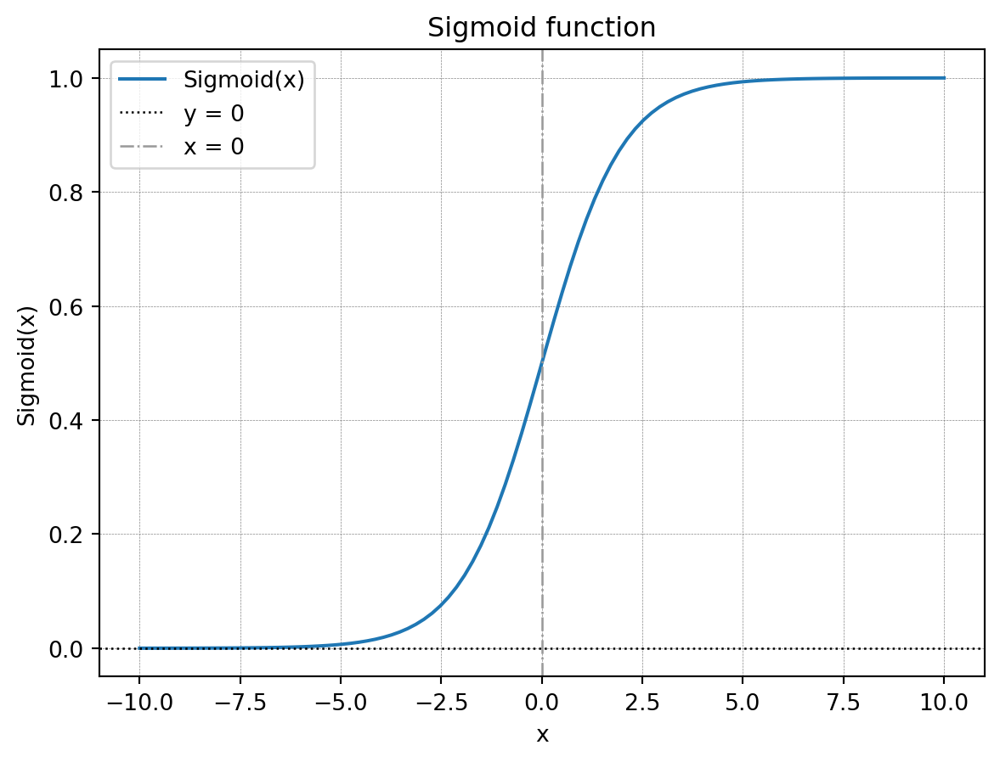
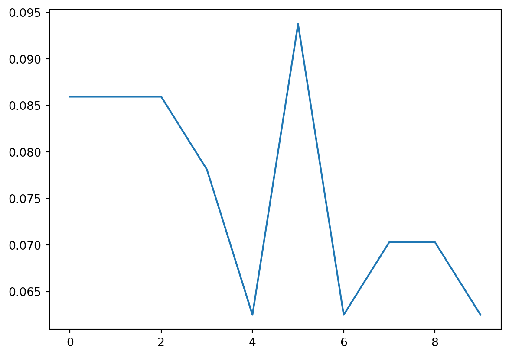
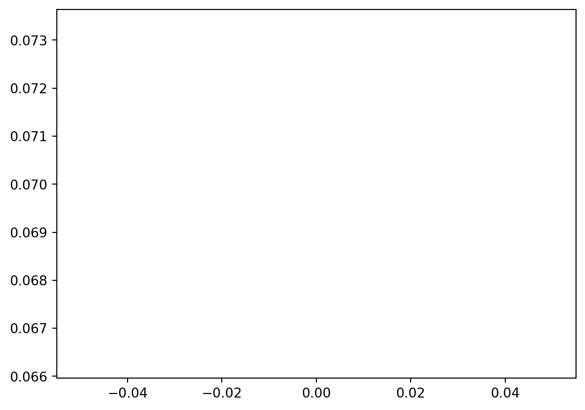
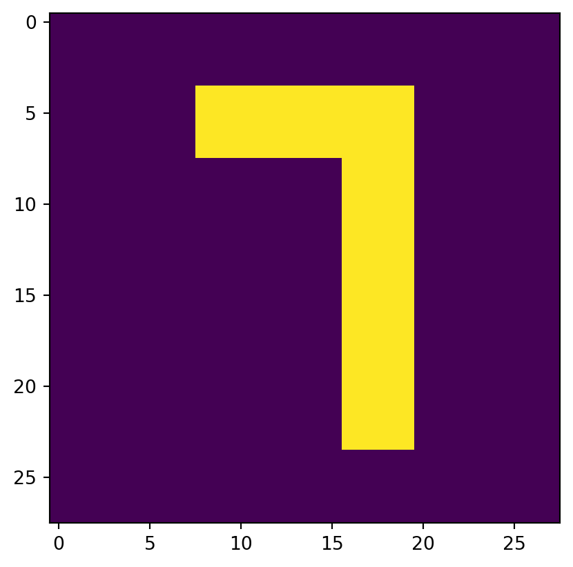
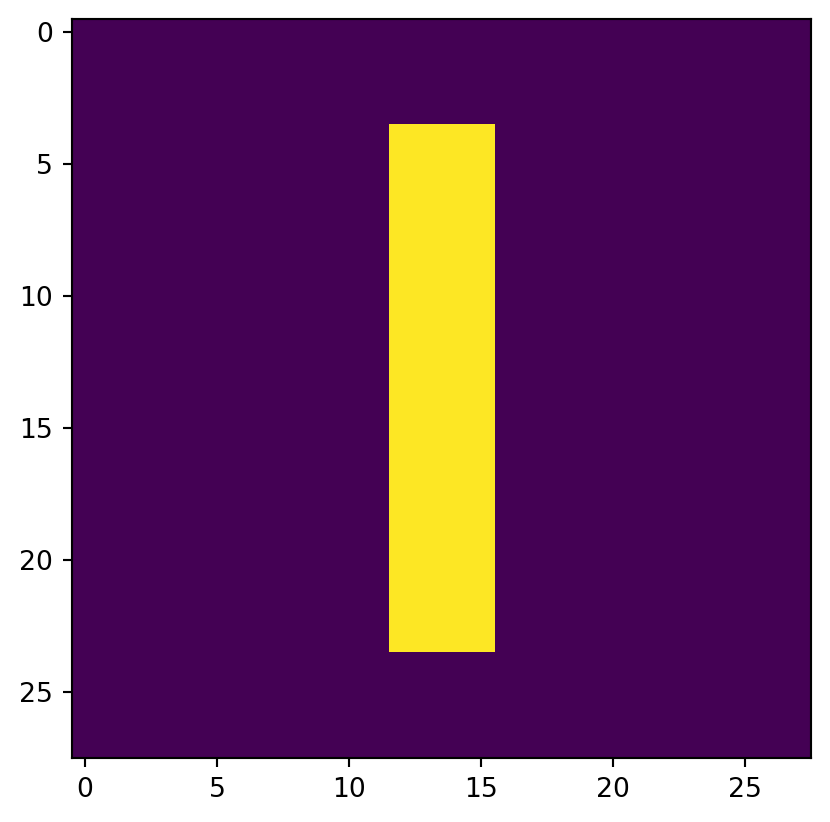

import numpy as np
import requests, gzip, os, hashlib
import matplotlib.pyplot as plt+++ author = ‘Aditya Srinias Menon’ title = ‘Mnist From Numpy’ date = 2024-12-11T08:40:05Z draft = false format = ‘hugo-md’ math = true +++
So I recently made a classifier for the MNIST handwritten digits dataset using PyTorch and later, after celebrating for a while, I thought to myself, “Can I recreate the same model in vanilla python?” Of course, I was going to use NumPy for this. Instead of trying to replicate NumPy’s beautiful matrix multiplication, my purpose here was to gain a better understanding of the model by reinventing the wheel.
I challenged myself to make a similar classifier in numpy and learn some of the core concepts of Deep Learning along the way. You can find the code in my GitHub repository.
Our workflow should look something like this:
- Fetch the data
- Split training set into training set and validation set
- Initialize the weights
- Define our activation functions and its derivatives
- Define a function for forward pass and backward pass (laborious!)
- Train our model in batches using SGD, update the weights and test our model on the validation set
- Predict on the test data and get the accuracy
For this model, I decided to go with sigmoid and softmax as activation functions to keep things simple.
Fetch the data
Let us now welcome NumPy, the protagonist of our story.
Define a function to take the utf-8 encoded data, decompress it and convert it into a NumPy array. This code was taken from a notebook by George Hotz which you can find here.
path='/home/karynaur/data/'
def fetch(url):
fp = os.path.join(path, hashlib.md5(url.encode('utf-8')).hexdigest())
print(fp, url)
if os.path.isfile(fp):
with open(fp, "rb") as f:
data = f.read()
else:
with open(fp, "wb") as f:
data = requests.get(url).content
f.write(data)
return np.frombuffer(gzip.decompress(data), dtype=np.uint8).copy()
X = fetch("http://yann.lecun.com/exdb/mnist/train-images-idx3-ubyte.gz")[0x10:].reshape((-1, 28, 28))
Y = fetch("http://yann.lecun.com/exdb/mnist/train-labels-idx1-ubyte.gz")[8:]
X_test = fetch("http://yann.lecun.com/exdb/mnist/t10k-images-idx3-ubyte.gz")[0x10:].reshape((-1, 28*28))
Y_test = fetch("http://yann.lecun.com/exdb/mnist/t10k-labels-idx1-ubyte.gz")[8:]
print("Shape of training data, X = ", X.shape)
print("Shape of training labels, Y = ", Y.shape)
print("Shape of test data, X_test = ", X_test.shape)
print("Shape of test labels, Y_test = ", Y_test.shape)/home/karynaur/data/23278f029ff68f1e993776e500ce06b9 http://yann.lecun.com/exdb/mnist/train-images-idx3-ubyte.gz
/home/karynaur/data/d8b415e67abd11881e156b8f111d3300 http://yann.lecun.com/exdb/mnist/train-labels-idx1-ubyte.gz
/home/karynaur/data/b0cdab8e37ae7c1c5560ee858afaac1d http://yann.lecun.com/exdb/mnist/t10k-images-idx3-ubyte.gz
/home/karynaur/data/d4fdde61aca9f72d5fe2315410bb46a5 http://yann.lecun.com/exdb/mnist/t10k-labels-idx1-ubyte.gz
Shape of training data, X = (60000, 28, 28)
Shape of training labels, Y = (60000,)
Shape of test data, X_test = (10000, 784)
Shape of test labels, Y_test = (10000,)Split the data
Since the data only contains a training set and testing set, let us split the training set into training \((X_train, Y_train)\) and validation \((X_val, Y_val)\).
rand = np.arange(60000)
np.random.shuffle(rand)
train_no = rand[:50000]
val_no = np.setdiff1d(rand, train_no)
X_train, X_val = X[train_no,:,:], X[val_no,:,:]
Y_train, Y_val = Y[train_no], Y[val_no]
print(X_train.shape, X_val.shape)(50000, 28, 28) (10000, 28, 28)Initialize the weights
Let us now define a function that takes in, the size of the matrix as input and returns initialized weights.
def init(x: int, y: int) -> np.array:
"""
x: int = input size
y: int = output size
"""
layer = np.random.uniform(-1.,1.,size=(x,y))/np.sqrt(x*y)
return layer.astype(np.float32)
np.random.seed(42)
l1 = init(28*28, 128)
l2 = init(128, 10)The neural network is going to be a simple network of three layers. The input layer consists of \(784\) units corresponding to every pixel in the \(28\) by \(28\) image from the MNIST dataset. The second layer(hidden layer) drops down to \(128\) units and lastly the final layer with \(10\) units corresponding to digits \(0–9\).
{{< figure src="network.png" title="Network architecture. For the sake of simplicity, only one connection from each unit has been shown." width=400 class=figure >}}Thus l1 is a matrix of size \((784,128)\) and l2 is a matrix of size \((128,10)\).
Activation function
Functions can be generalized as processes that takes in an input and spits out an output. Activation functions are those functions that take in weighted sum of neurons as input (varying in magnitude) and turn it into meaningful data that can be easily understood or fed into the next layer. Sigmoid and softmax are two such activation functions that we will be working with.
Sigmoid function
The sigmoid function is defined as:
\(\text{Sigmoid}(x) = \displaystyle \frac{1}{1 + e^{-x}}\)
It can be visualized by plotting a graph taking \(f(x) = y\) as such:
Click to show the code for plotting the below graph.
# Sigmoid funstion
def sigmoid(x: np.array) -> np.array:
return 1 / (np.exp(-x)+1)
# plotting the sigmoid function
x = np.linspace(-10,10,100)
plt.plot(x,sigmoid(x))
plt.axhline(y=0, color='k',linewidth=0.95, linestyle=':')
plt.axvline(x=0, color='.6', linewidth=0.95, linestyle='-.')
plt.grid(color = 'gray', linestyle = '--', linewidth = 0.25)
plt.legend(['Sigmoid(x)', 'y = 0', 'x = 0'])
plt.xlabel('x')
plt.ylabel('Sigmoid(x)')
plt.title('Sigmoid function')
plt.show()
It takes in literally anything and spits out a number between \(0\) and \(1\). In python code sigmoid and its derivative would look something like this:
# Sigmoid funstion
def sigmoid(x: np.array) -> np.array:
return 1 / (np.exp(-x)+1)
# Derivative of sigmoid
def d_sigmoid(x: np.array) -> np.array:
return (np.exp(-x)) / ((np.exp(-x) + 1) ** 2)In our model, we use the sigmoid function to squish the random outputs given out by layer \(1\) into numbers between \(0\) and \(1\).
Softmax function
A Softmax function takes in a vector as input and spits out a vector of same size having elements that sum up to \(1\). Every element in the output vector is between \(0\) and \(1\), and thus these values can be interpreted as probabilities.
\(\text{softmax}(z_i) = \displaystyle \frac{e^{z_i}}{\sum_{j=1}^n e^{z_j}}\)
Softmax function in python code will look something like this:
def softmax(x: np.array) -> np.array:
exps = np.exp(x)
return exps / np.sum(exps)To understand how softmax works, let us declare a simple numpy array and call the softmax function on it.
out = np.array([1,2,3])
softmax(out), sum(softmax(out))(array([0.09003057, 0.24472847, 0.66524096]), np.float64(1.0))From the second result it is clear that although the sum of out is not \(1\), the sum of its softmax is indeed \(1\). Therefore we can consider the values of the softmax array as the probability of the respective elements in the parent array.
\(1\) in the distribution of \[1,2,3]\ is least probable as its softmax value is \(0.090\), on the other hand, \(3\) in the same distribution is highly probable, having a softmax value of \(0.6652\).
In our model, the output layer spits out a vector of shape \(10\) having different magnitudes. Hence, we use softmax to normalize our result. For example, let us take a vector that looks similar to our model output and feed it to the softmax function:
output_of_layer_2 = np.array([12,34,-67,23,0,134,76,24,78,-98])
a = softmax(output_of_layer_2)
a, sum(a)(array([1.03770332e-053, 3.72007598e-044, 5.09107081e-088, 6.21315959e-049,
6.37586958e-059, 1.00000000e+000, 6.47023493e-026, 1.68891188e-048,
4.78089288e-025, 1.75258947e-101]),
np.float64(1.0))Now if we run the NumPy’s argmax function on the softmax result we get the index of the element having the maximum value:
x = np.argmax(a)
x, output_of_layer_2[x](np.int64(5), np.int64(134))To prevent overflow, we use a simplified version of the softmax. Let us now define the softmax and its derivative:
#Softmax
def softmax(x: np.array) -> np.array:
exp_element = np.exp(x - x.max())
return exp_element / np.sum(exp_element, axis=0)
#derivative of softmax
def d_softmax(x: np.array) -> np.array:
exp_element = np.exp(x - x.max())
return exp_element / np.sum(exp_element, axis=0) * (1-exp_element / np.sum(exp_element, axis=0))Forward and Backward pass
Let us now define a function to carry out the forward pass and the backward pass during an iteration.
#forward and backward pass
def forward_backward_pass(x, y):
targets = np.zeros((len(y), 10), np.float32)
targets[range(targets.shape[0]), y] = 1
x_l1 = x.dot(l1)
x_sigmoid = sigmoid(x_l1)
x_l2 = x_sigmoid.dot(l2)
out = softmax(x_l2)
error = 2 * (out-targets) / out.shape[0] * d_softmax(x_l2)
update_l2 = x_sigmoid.T@error
error = ((l2).dot(error.T)).T*d_sigmoid(x_l1)
update_l1 = x.T@error
return out, update_l1, update_l2 Let us go over the code line by line, and understand how it works.
Y_train is essentially a vector of \(50,000\) elements, having the correct digit corresponding to the images in X_trains.
ex = np.array(Y_train[1]).reshape(1, -1)
exarray([[3]], dtype=uint8)On the other hand our model outputs a vector of 10 elements for each training example. Therefore our primary task is to convert the Y_train into a vector having \(1\) corresponding to the “correct” digit and \(0\) for the rest.
example_out = np.zeros((len(ex), 10), np.float32)
example_out[range(example_out.shape[0]), ex] = 1
example_outarray([[0., 0., 0., 1., 0., 0., 0., 0., 0., 0.]], dtype=float32)As you can see the element in the fifth position having an index of ‘\(4\)’ has a \(1\) whereas the rest of the elements are \(0\).
Now comes the forward pass where the input matrix is multiplied with the weights and passed through the respective activation functions.
x_l1 = x.dot(l1)
x_sigmoid = sigmoid(x_l1)
x_l2 = x_sigmoid.dot(l2)
out = softmax(x_l2)In the first line x is matrix multiplied with the first layer and is normalized by passing through the sigmoid function.
{{< figure src="network_sigmoid.png" title="Network architecture. For the sake of simplicity, only one connection from each unit has been shown." width=550 class=figure >}}The sigmoid product is later matrix multiplied with the second layer and is passed through the softmax function to get the output vector of size 10, similar to our target vector.
{{< figure src="network_softmax.png" title="Network architecture. For the sake of simplicity, only one connection from each unit has been shown." width=550 class=figure >}}Now it’s time to backpropagate and update our weights. Our aim here is to find matrices similar in shape to that of l1 and l2, that can be subtracted from l1 and l2 to get closer to the ideal answer by minimising error.
But what exactly is error?
\(error = 2 * (out - targets)\)
This calculates the error in the current epoch along with its direction. By how far are we away from achieving the ideal answer.
Let us have a look at what ‘out’ really is:
\(out = softmax(x\\_l2)\)
It is the product of our neural network.
We now need to find an entity that tells us by how much the out changes if there is a change in x_l2.
YEP! You guessed it right. This entity is called the derivative! We need to find the derivative of softmax at the point x_l2 in space such that when we change x_l2 by (error * derivative of softmax at x_l2) our out moves closer to the ideal targets, and that in python code looks like:
error= 2 * (out - targets) / out.shape[0] * d_softmax(x_l2)But what exactly is x_l2?
\(x\\_l2 = x\\_sigmoid@l2\)
We now know by how much we need to change x_l2, but x_l2 is the product of the sigmoid output of the first layer and the l2, and we cannot change it. We only have control over the weights! So to turn the previous error into something that can be subtracted from l2 let us define a \(update_l2\).
update_l2 = x_sigmoid.T@errorPhew! We are done with the second layer, now let us do the same for the first. Instead of taking the derivative of the softmax, we shall be taking the derivative of sigmoid at point x_l1 in space.
error= ((l2).dot(error.T)).T*d_sigmoid(x_l1)And define \(update_l1\) which can be subtracted from l1.
update_l1 = x.T@errorWith this we come to the end of forward and backward pass.
Training loop
Now comes the training part. We shall perform Stochastic Gradient Descent by sending our training set in batches of \(128\) with a learning rate of \(0.001\). We can do this by simply creating a sample set containing \(128\) elements randomly chosen from 0 to \(50,000\) (the size of X_train), and extracting all elements from X_train and Y_train having the respective indices.
epochs = 10000
lr = 0.001
batch = 128
sample = np.random.randint(0, X_train.shape[0], size=(batch))
x = X_train[sample].reshape((-1, 28*28))
y = Y_train[sample]Let us now send x and y through the forward_backward() function and store its outputs in \(out\), \(update_l1\) and \(update_l2\) respectively.
Pick the category and calculate the accuracy of the batch.
out, update_l1, update_l2 = forward_backward_pass(x, y)
category = np.argmax(out,axis=1)
accuracy = (category == y).mean()
accuracies.append(accuracy)Calculate the loss using mean squared error loss.
loss= ((category - y) ** 2).mean()
losses.append(loss.item())Update the weights.
l1 = l1 - lr * update_l1
l2 = l2 - lr * update_l2And finally test the model on a dataset it has not yet seen, i.e. the validation set.
X_val = X_val.reshape((-1, 28*28))
val_out = np.argmax(softmax(sigmoid(X_val.dot(l1)).dot(l2)), axis=1)
val_acc = (val_out == Y_val).mean()
val_accuracies.append(val_acc.item())Putting it all together inside a for loop:
epochs = 10
lr = 0.001
batch = 128
losses, accuracies, val_accuracies = [], [], []
for i in range(epochs):
sample = np.random.randint(0, X_train.shape[0], size=(batch))
x = X_train[sample].reshape((-1, 28*28))
y = Y_train[sample]
out, update_l1, update_l2 = forward_backward_pass(x,y)
category = np.argmax(out, axis=1)
accuracy = (category == y).mean()
accuracies.append(accuracy)
loss = ((category - y) ** 2).mean()
losses.append(loss.item())
l1 = l1 - lr * update_l1
l2 = l2 - lr * update_l2
if(i % 20 == 0):
X_val = X_val.reshape((-1, 28*28))
val_out = np.argmax(softmax(sigmoid(X_val.dot(l1)).dot(l2)), axis=1)
val_acc = (val_out == Y_val).mean()
val_accuracies.append(val_acc.item())
if( i % 500 == 0): print(f'For {i}th epoch: train accuracy: {accuracy:.3f} | validation accuracy:{val_acc:.3f}')For 0th epoch: train accuracy: 0.086 | validation accuracy:0.070And YESSS! It is clear from the output that the model has learnt how to predict.
Now let us visualize the training and validation accuracy.
# plot accuracies
plt.plot(accuracies)
# plot accuracies
plt.plot(val_accuracies)
The training accuracy fluctuates but the validation accuracy increases initially and plateaus later on, signifying that the model has reached its limit.
Let us now test our model on the testing set provided.
test_out = np.argmax(softmax(sigmoid(X_test.dot(l1)).dot(l2)), axis=1)
test_acc = (test_out == Y_test).mean().item()
print(f'Test accuracy = {test_acc*100:.2f}%')Test accuracy = 7.35%Can it handle an ideal test? Inspired by George Hotz from his notebook, let us test our model on something that looks like a 7.
m = [[0,0,0,0,0,0,0],
[0,0,10,10,10,0,0],
[0,0,0,0,10,0,0],
[0,0,0,0,10,0,0],
[0,0,0,0,10,0,0],
[0,0,0,0,10,0,0],
[0,0,0,0,0,0,0]]
m = np.concatenate([np.concatenate([[x]*4 for x in y]*4) for y in m])
m = m.reshape(1,-1)
plt.imshow(m.reshape(28,28))
x = np.argmax(sigmoid(m.dot(l1)).dot(l2),axis=1)
print('Ground truth: 7')
print('Predicted:', x.item())Ground truth: 7
Predicted: 6
Maybe a 1?
n = [[0,0,0,0,0,0,0],
[0,0,0,10,0,0,0],
[0,0,0,10,0,0,0],
[0,0,0,10,0,0,0],
[0,0,0,10,0,0,0],
[0,0,0,10,0,0,0],
[0,0,0,0,0,0,0]]
n = np.concatenate([np.concatenate([[x]*4 for x in y]*4) for y in n])
n = n.reshape(1,-1)
plt.imshow(n.reshape(28,28))
x = np.argmax(sigmoid(n.dot(l1)).dot(l2),axis=1)
print('Ground truth: 7')
print('Predicted:', x.item())Ground truth: 7
Predicted: 6
There you go, we have successfully trained and tested a deep learning model, completely made from python NumPy! You can find the code on Github